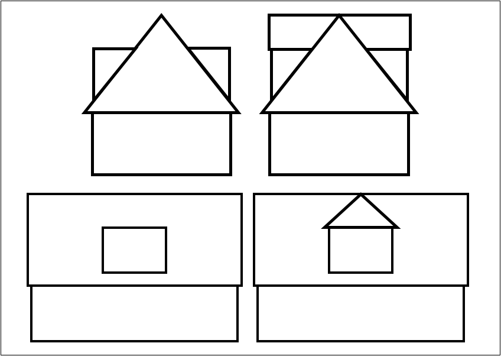
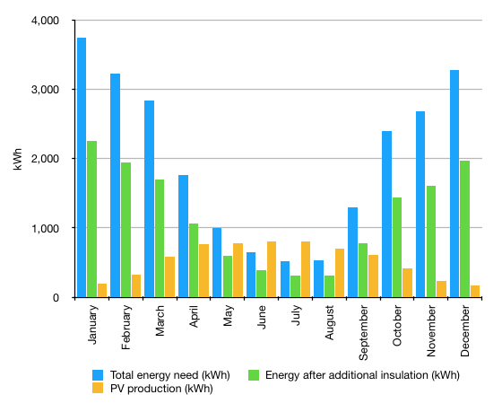
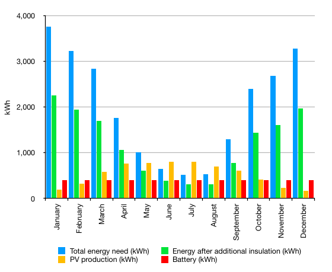
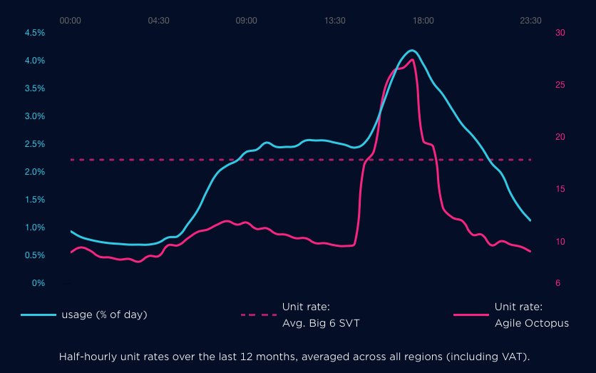

Climate Change - What can we do?
Climate change is rarely out of the news these days. We have activists holding protest marches and a young Swedish girl addressing the United Nations. As a concerned citizen I agree with the principles that these people are espousing. As an individual I can urge our government to take action or support the IET in its lobbying of government, but what can we do as a family to 'play our part'?
We already walk and take the bus wherever we can. It helps that we live only a ten minute walk from an adequate selection of shops and that we have bus passes! Against that, I have a 71 year-old car that in no way meets current emission standards and we do like to keep warm. Also, our daughter and her family live in California; difficult to get to without flying. Our son and his family, on the other hand, live just outside Rotterdam. We can take (and have taken) the train or could do a train/boat combination, but flying is currently the cheapest option!
Clearly travel is one area where we could make our contribution to reducing CO2 emissions and I'll return to this later. However, perhaps the biggest area where we as a family could reduce the amount of greenhouse gas produced is in our use of energy at home or perhaps more in the way of reducing our use of energy, the generation of which releases CO2 into the atmosphere.
It so happens that almost six months ago we downsized; seriously downsized. I can recommend the concept, but not the process. A lot of our furniture was too large or there was just too much and even after three iterations of disposal (mainly to charity shops and the local recycling centre) we still had too much 'stuff'. Then, from an energy point of view, we moved into a small 1970's A-frame house, with all that implies with regard to insulation. The house has been well maintained, but has little in the way of energy efficiency improvements apart from double glazing that had clearly been installed many years ago. Since the first floor is built within the roof, with dormers on both sides, it is difficult to add insulation. The ground floor walls are conventional brick, with the cavities already filled (we think), with gas-fired central heating, an electric oven and a gas hob.
 So, where do we start in a quest to reduce our personal carbon footprint? According to my measurements and calculations, 44% of our heat loss is through the windows. We could halve that by installing modern, triple-glazed units, perhaps using hardwood frames rather than plastic for an extra tick on our list of 'green' credentials. That would leave the combination of tiled roof, flat roofs and tile-hung walls around dormers as the region of greatest heat loss. To make any significant difference to these areas we would need to take off the existing tiles and felt, increase the depth of the timbers, put pitched roofs from the ridge to the outside edge of the dormers or put a pitched roof at right angles to the main roof over each dorma and install extra insulation before replacing the tiles. A big job! And raising the roof and changing the flat roofs would require planning approval. However, making both these changes (windows and roof insulation) should reduce our energy use for space heating to about 60% of its current value.
So, where do we start in a quest to reduce our personal carbon footprint? According to my measurements and calculations, 44% of our heat loss is through the windows. We could halve that by installing modern, triple-glazed units, perhaps using hardwood frames rather than plastic for an extra tick on our list of 'green' credentials. That would leave the combination of tiled roof, flat roofs and tile-hung walls around dormers as the region of greatest heat loss. To make any significant difference to these areas we would need to take off the existing tiles and felt, increase the depth of the timbers, put pitched roofs from the ridge to the outside edge of the dormers or put a pitched roof at right angles to the main roof over each dorma and install extra insulation before replacing the tiles. A big job! And raising the roof and changing the flat roofs would require planning approval. However, making both these changes (windows and roof insulation) should reduce our energy use for space heating to about 60% of its current value.
We should also consider heat loss through the ground floor, which is a concrete slab or concrete in-fill between conventional footings. A mass of concrete acts as a thermal store, heated from the rooms above. During winter it will certainly be at a higher temperature than the outside air temperature. Even with a winter ground temperature of 5°C my calculations suggest that we would lose less than 0.7kW through the floor. Also, to install additional insulation would require at least 20mm thick slabs, which would raise the floor level too much.
But we are still using gas to provide space heating and that is the lion's share of our energy usage. We could replace the boiler with a more efficient model, but we would still be burning at least 50% of our current gas usage. Our current energy supplier says that they buy electrical power from renewable energy generators, but replacing gas with electricity for heating presents us with several options.
- Storage radiators could be installed. They would essentially replace the existing radiators, although finding suitable wall space in the sitting room so as to give the necessary heat output might be difficult. Also, there is not scope to use them in the kitchen or bathroom or downstairs shower room. New wiring would need to be installed to cater for the current required and we would need to change to an off-peak tariff.
- We could install a heat pump, either air-source or ground-source, to warm air or water and then circulate it around the house. Heating water to pump around the existing radiators is not an option since it would not be able to reach the water temperature required. A ground-source heat pump would be very expensive to install, requiring a bore-hole to be drilled. Our garden is too small to have a horizontal pipe buried in the ground and, apparently, it would need a 100m deep borehole in order to generate 4kW in the way of hot water. Then we would need to use 'wet' underfloor heating throughout the house. Although air-source heat pumps are available, the amount of heat that they can extract from the air in winter is much reduced, just at the time that you need it most. Also, ducting hot air around the house would be a major upheaval.
- We could install electric underfloor heating. Additional wiring may need to be installed and it would cause major disruption in each room. Since it would need to operate during the day, my calculations suggest that running costs would be 50% greater than our current heating bill if we stayed on our current electricity tariff. The electricity price per kWh is just so much more expensive than gas. However, of the approximately 90m2 floor area, it seems that 36m2 of electric underfloor heating would be needed to balance the current heat loss or 22m2 after installing triple glazing and roof installation (140W/m2 according to the Warmup site for their foil heating system). This type of equipment, including thermostats/controllers, is apparently suitable, with different types of top layer, for carpeted, tiled or engineered wood flooring.
So if we want to stop using gas for heating then only electric underfloor heating would seem to be a practical option. However, a cheaper way of obtaining electricity would be required. There certainly doesn't seem to be any incentive (Government or otherwise) to move to zero carbon!
If we want to use electric heating then perhaps we could generate our own electricity, at least for some of the need. It so happens that our A-frame house has one side of the roof facing due south and at an angle of 35° to the vertical. There is a useful web site that does the calculations for you on the variation in energy due to movement of the sun throughout the year. You select your location, orientation and slope of roof and it does the rest. You then download a cvs or pdf file with the results. For an 18-panel PV system it suggested that the electrical generation would vary from 5% of our total need in December and January to 155% in July. The bar chart shows our anticipated energy usage, both before any additional insulation and after the steps discussed above, plus what we could expect to generate from 18 photovoltaic panels throughout the year. Clearly between April and September PV generation would provide a significant proportion of our needs, being able to export energy during the summer months (when it is least needed). However, for six months of the year we would be dependent upon grid electricity.
Perhaps battery storage would help. A battery could be charged in winter over night, using cheap rate electricity from the grid (see comments on 'agile' rates below), and in summer using electricity generated from PV panels. In winter the battery is used during the day and in summer to provide power after dark.
Adding battery storage is shown in the next bar chart. In December and January it might make only a small difference, but any little helps. However, during summer months the battery could provide most, if not all, of the monthly power needed. A useful comparison of currently available domestic battery storage systems is available here.
Of course, all these things associated with reducing energy usage and generating/storing energy cost money, a significant amount. Without getting specific quotations from suppliers it is difficult to arrive at an indicative cost. However, using general guidelines or calculating material and labour costs and then adding 20% I've arrived at the following:
| Triple-glazed windows |
£9,000 |
| Triple-glazed patio door |
£3,600 |
| Roof insulation* |
£11,520 |
| PV panels |
£12,000 |
| Battery storage |
£9,000 |
| Electric underfloor heating |
£10,800 |
| Total: |
£55,920 |
* This includes raising the roof and replacing flat roofs with sloping tiled sections.
I've not even tried to estimate the pay-back period for these investments, since we would probably never recoup the costs. However, running costs are more difficult to estimate. As indicated above, moving to electricity for heating would add 50% to our energy costs. However, our current supplier provides what they call an Agile tariff. This uses a different rate for each half-hour period. The red line on the graph shows the unit rate over a 24 hour period (averaged over a year). I thought that the whole plot would move up during the winter when there is higher demand, but comparing January with July, it is only slightly time shifted. The blue line shows a typical 'family' usage of electricity, again over the 24 hour period.
So, by using the washing machine and dishwasher at night and by charging a storage battery in winter over night, it should be possible to minimise the cost of the electricity used. Using some of the data behind this graph you can apply that usage daily profile to our total consumption and estimate the likely energy cost. Even with the 'agile' tariff the unit cost of electricity at its cheapest (during the night) is still three times that of gas. So, at our current rate of energy consumption, the cost of moving to electric heating would cost more than twice what it does currently. However, after including the effect of additional insulation and installing PV panels, the annual cost comes down to two thirds of our current expenditure. The return on the capital listed above, however, would take much longer than the time we have left on this planet!
I said earlier that transport was an area where we as a family could reduce our carbon footprint. We have a small petrol engined car, that will soon be due for replacement, and an old (71 years old), very polluting, sports car. We could replace our daily run-about with an electric car. The vast majority of our trips by car are within a 30 mile radius of where we live, so range is not an issue. The occasional longer trip could probably be planned around the location of public charging points. An electric car would need to be small so as to fit in our garage next to the MG, which might limit the choice, and the cost of electric vehicles is still significantly higher than a petrol equivalent.
Finally, we could reduce our consumption of meat and dairy products so as to reduce our indirect production of CO2. We already seem to eat smaller portions than most people and our menu often includes vegetarian dishes. So yes, we could make some reduction, but it wouldn't be very significant. However, we could take action to help remove CO2 from the atmosphere. Our previous garden had about 13 mature trees and half a dozen large bushes, but our present garden is too small to take even one tree. But all is not lost. We could make regular donations to a charity that has an ongoing programme of tree planting throughout the UK. We can't really have enough trees.
Clearly individual householders can make a contribution to the reduction of carbon emissions, but the financial incentives are not there to completely move away from the use of hydrocarbons. The use of 'agile' electricity tariffs are aimed at helping to remove the peaks of demand by encouraging consumers to run appliances at off-peak times, but they do nothing to allow electric heating to compete with gas. So where does that leave us for our 1970's A-framed house? Clearly installing triple glazed windows and doing major surgery to the roof to increase its insulation would have a significant impact on our energy usage and thus reduction in the production of CO2. Then, generating electricity using photovoltaic panels and using battery storage would also reduce the electrical energy used from the grid. However, replacing the gas boiler with electric heating so as to totally avoid generating CO2 is a little more difficult to justify, partly due to the running cost, but mainly due to the upheaval of installation. So it looks as though we will need to replace the old boiler with more efficient one and hope that the whole natural gas distribution network is changed to distribute hydrogen. However, we can certainly reduce the amount of petrol that we burn by moving to an electric vehicle as our daily run-around and we can help remove CO2 from the atmosphere by paying someone to plant trees. Then we could breath more easily, knowing that we had made our individual contribution to fighting climate change, even if it did cost us an arm and a leg.
© David James 2019 Last updated: 7th December 2019